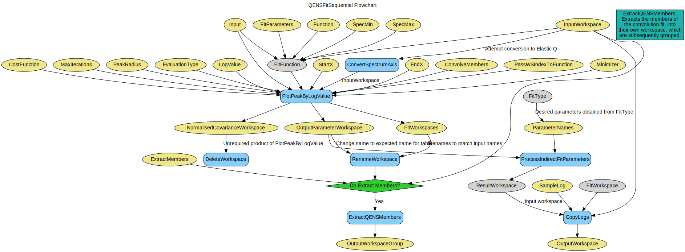

\(\renewcommand\AA{\unicode{x212B}}\)
ConvolutionFitSequential v1¶
{kind=link}
ConvolutionFitSequential dialog.¶
Summary¶
Performs a sequential fit for a convolution workspace
See Also¶
Properties¶
Name |
Direction |
Type |
Default |
Description |
|---|---|---|---|---|
InputWorkspace |
Input |
The input workspace for the fit. This property will be ignored if ‘Input’ is provided. |
||
SpecMin |
Input |
number |
0 |
The first spectrum to be used in the fit. Spectra values can not be negative. This property will be ignored if ‘Input’ is provided. |
SpecMax |
Input |
number |
0 |
The final spectrum to be used in the fit. Spectra values can not be negative. This property will be ignored if ‘Input’ is provided. |
Input |
Input |
string |
A list of sources of data to fit. Sources can be either workspace names or file names followed optionally by a list of spectra/workspace-indices or values using the notation described in the description section of the help page. |
|
ResultXAxisUnit |
Input |
string |
MomentumTransfer |
The unit to assign to the X Axis of the result workspace, defaults to MomentumTransfer. Allowed values: [‘AtomicDistance’, ‘Degrees’, ‘DeltaE’, ‘DeltaE_inFrequency’, ‘DeltaE_inWavenumber’, ‘dSpacing’, ‘dSpacingPerpendicular’, ‘Empty’, ‘Energy’, ‘Energy_inWavenumber’, ‘Label’, ‘Momentum’, ‘MomentumTransfer’, ‘Phi’, ‘QSquared’, ‘SpinEchoLength’, ‘SpinEchoTime’, ‘Temperature’, ‘Time’, ‘TOF’, ‘Wavelength’, ‘’] |
OutputWorkspace |
Output |
WorkspaceGroup |
Mandatory |
The output result workspace(s) |
OutputParameterWorkspace |
Output |
The output parameter workspace |
||
OutputWorkspaceGroup |
Output |
WorkspaceGroup |
The output group workspace |
|
Function |
InOut |
Function |
Mandatory |
The fitting function, common for all workspaces in the input. |
LogName |
Input |
string |
axis-1 |
Name of the log value to plot the parameters against. Default: use spectra numbers. |
StartX |
Input |
dbl list |
A value of x in, or on the low x boundary of, the first bin to include in the fit (default lowest value of x) |
|
EndX |
Input |
dbl list |
A value in, or on the high x boundary of, the last bin the fitting range (default the highest value of x) |
|
PassWSIndexToFunction |
Input |
boolean |
False |
For each spectrum in Input pass its workspace index to all functions thathave attribute WorkspaceIndex. |
Minimizer |
Input |
string |
Levenberg-Marquardt |
Minimizer to use for fitting. Minimizers available are ‘Levenberg-Marquardt’, ‘Simplex’, ‘FABADA’, ‘Conjugate gradient (Fletcher-Reeves imp.)’, ‘Conjugate gradient (Polak-Ribiere imp.)’ and ‘BFGS’ |
CostFunction |
InOut |
string |
Least squares |
Cost functions to use for fitting. Cost functions available are ‘Least squares’ and ‘Ignore positive peaks’. Allowed values: [‘Least squares’, ‘Poisson’, ‘Rwp’, ‘Unweighted least squares’] |
MaxIterations |
Input |
number |
500 |
Stop after this number of iterations if a good fit is not found |
PeakRadius |
Input |
number |
0 |
A value of the peak radius the peak functions should use. A peak radius defines an interval on the x axis around the centre of the peak where its values are calculated. Values outside the interval are not calculated and assumed zeros.Numerically the radius is a whole number of peak widths (FWHM) that fit into the interval on each side from the centre. The default value of 0 means the whole x axis. |
ExtractMembers |
Input |
boolean |
False |
If true, then each member of the fit will be extracted, into their own workspace. These workspaces will have a histogram for each spectrum (Q-value) and will be grouped. |
OutputCompositeMembers |
Input |
boolean |
False |
If true and CreateOutput is true then the value of each member of a Composite Function is also output. |
ConvolveMembers |
Input |
boolean |
False |
If true and OutputCompositeMembers is true members of any Convolution are output convolved with corresponding resolution |
EvaluationType |
Input |
string |
CentrePoint |
The way the function is evaluated: CentrePoint or Histogram. Allowed values: [‘CentrePoint’, ‘Histogram’] |
FitType |
Input |
string |
Sequential |
Defines the way of setting initial values. If set to Sequential every next fit starts with parameters returned by the previous fit. If set to Individual each fit starts with the same initial values defined in the Function property. Allowed values: [Sequential, Individual]. Allowed values: [‘Sequential’, ‘Individual’] |
Exclude |
Input |
dbl list |
A list of pairs of real numbers, defining the regions to exclude from the fit. |
|
ExcludeMultiple |
Input |
str list |
A list of Exclusion ranges, defining the regions to exclude from the fit for each spectra. Must have the same number of sets as the number of the spectra. |
|
IgnoreInvalidData |
Input |
boolean |
False |
Flag to ignore infinities, NaNs and data with zero errors. |
OutputFitStatus |
Input |
boolean |
False |
Flag to output fit status information, which consists of the fit OutputStatus and the OutputChiSquared |
Description¶
Performs a sequential fit involving a convolution with a defined resolution. This algorithm is a special-case of QENSFitSequential, which calculates the elastic incoherent scattering factor when a delta function is provided in the fitting model.
Workflow¶
Usage¶
Example - ConvolutionFitSequential
# Load sample and resolution files
sample = Load('irs26176_graphite002_red.nxs')
resolution = Load('irs26173_graphite002_red.nxs')
# Set up algorithm parameters
function = """name=LinearBackground,A0=0,A1=0,ties=(A0=0.000000,A1=0.0);
(composite=Convolution,FixResolution=true,NumDeriv=true;
name=Resolution,Workspace=resolution,WorkspaceIndex=0;
name=Lorentzian,Amplitude=1,PeakCentre=0,FWHM=0.0175)"""
startX = -0.547608
endX = 0.543217
specMin = 0
specMax = sample.getNumberHistograms() - 1
convolve = True # Convolve the fitted model components with the resolution
minimizer = "Levenberg-Marquardt"
maxIt = 500
# Run algorithm
result_ws, _, _ = ConvolutionFitSequential(InputWorkspace=sample,
Function=function,
PassWSIndexToFunction=True,
StartX=startX, EndX=endX,
SpecMin=specMin, SpecMax=specMax,
ConvolveMembers=convolve,
Minimizer=minimizer, MaxIterations=maxIt)
result_ws = result_ws[0]
print("Result has %i Spectra" %result_ws.getNumberHistograms())
print("Amplitude 0: %.3f" %(result_ws.readY(0)[0]))
print("Amplitude 1: %.3f" %(result_ws.readY(0)[1]))
print("Amplitude 2: %.3f" %(result_ws.readY(0)[2]))
print("X axis at 0: %.5f" %(result_ws.readX(0)[0]))
print("X axis at 1: %.5f" %(result_ws.readX(0)[1]))
print("X axis at 2: %.5f" %(result_ws.readX(0)[2]))
print("Amplitude Err 0: %.5f" %(result_ws.readE(0)[0]))
print("Amplitude Err 1: %.5f" %(result_ws.readE(0)[1]))
print("Amplitude Err 2: %.5f" %(result_ws.readE(0)[2]))
Output:
Result has 3 Spectra
Amplitude 0: 4.314
Amplitude 1: 4.213
Amplitude 2: 4.555
X axis at 0: 0.52531
X axis at 1: 0.72917
X axis at 2: 0.92340
Amplitude Err 0: 0.00460
Amplitude Err 1: 0.00468
Amplitude Err 2: 0.00577
Categories: AlgorithmIndex | Workflow\MIDAS
Source¶
C++ header: ConvolutionFit.h
C++ source: ConvolutionFit.cpp